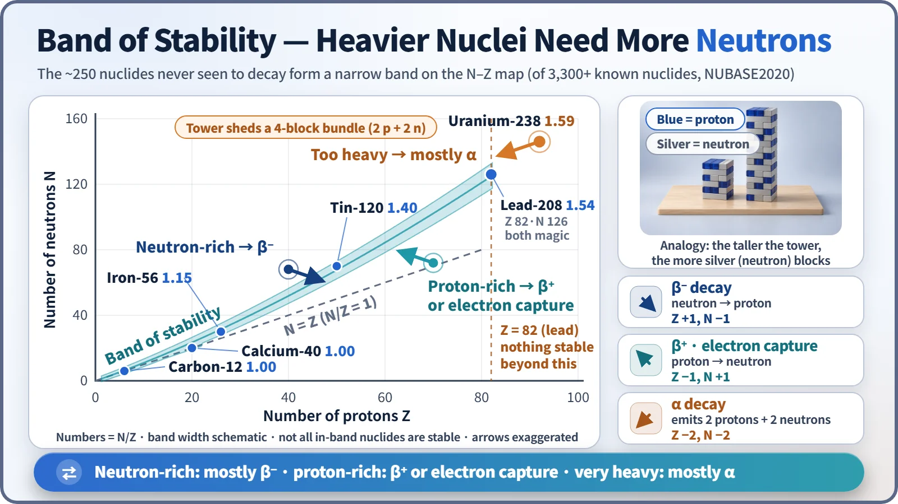
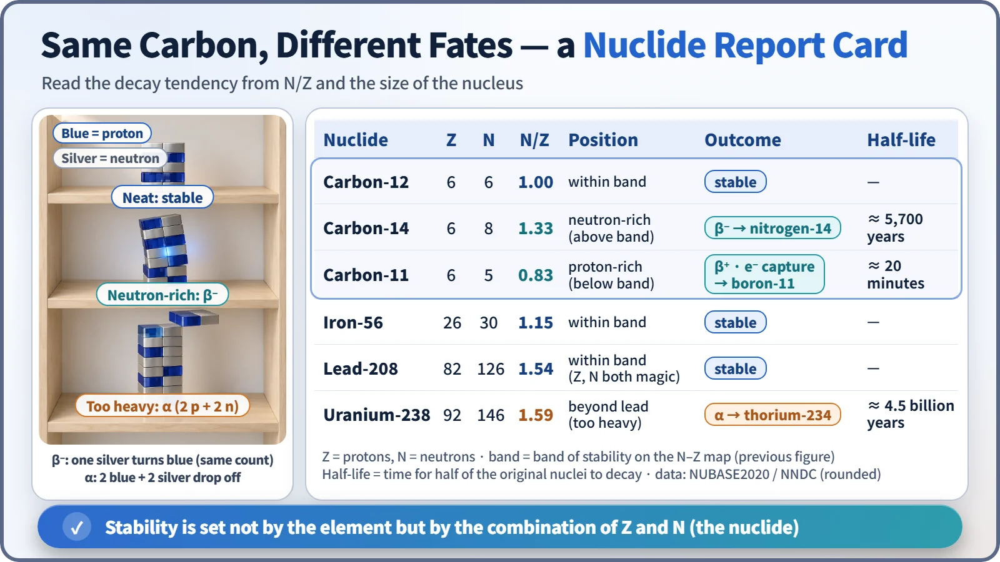

Nuclear & Radiation Basics · 010
A Tower Stands Only If the Block Mix Is Right — Stable and Unstable Nuclei
Stable nuclei line up along a narrow band of neutron-to-proton ratios. Nuclei off the band decay toward it by beta or alpha decay.
Of the more than 3,300 nuclides confirmed by experiment, only about 250 have never been seen to decay. What separates stable from unstable is the ratio of neutrons to protons: about 1 for light nuclei, rising to about 1.5 for heavy ones, and beyond lead (Z = 82) there is no stable nuclide at all. [1]
3,300 versus 250
Each kind of nucleus, defined by its numbers of protons and neutrons, is called a nuclide. More than 3,300 are known, but only about 250 have never been seen to change: fewer than one in ten. [2]
The other 3,000-odd, left alone, will sooner or later give off a particle or energy and turn into a different nucleus. That change is decay, and such a nucleus is an unstable nucleus or radionuclide. What separates the two groups is surprisingly simple: the ratio of protons to neutrons.
Picture a Jenga tower
Imagine Jenga with two kinds of blocks: blue for protons, silver for neutrons. The tower only stays up if the colors are mixed in the right ratio. A short tower stands fine half and half, but the taller it gets, the more silver support blocks it needs.
Why? Protons all carry positive charge and push each other away, and that repulsion grows as protons are added. The nuclear force that holds a nucleus together only works between immediate neighbors. So bigger nuclei need more neutrons, which hold on without pushing. A real nucleus isn't stacked under gravity, of course: "the tower stands" means it has settled into a lower-energy state with no reason to change.
A narrow band drawn on a map
Put the number of protons (Z) on the horizontal axis and the number of neutrons (N) on the vertical axis, and mark every stable nuclide as a dot.

The dots line up along one narrow band of stability. At the light end it hugs the N = Z diagonal: carbon-12 is 6:6 and calcium-40 is 20:20. As nuclei get heavier the band curves upward: iron-56 has 1.15 times as many neutrons as protons, lead-208 1.54 times. The band shows a trend, though; being near it doesn't guarantee stability. [3]
The band ends at lead, element 82. Heavier elements have no stable nuclides, which is why uranium and thorium are radioactive in nature without exception. [4]
From outside the band toward it: three routes
A tower with the wrong mix doesn't crash; it moves toward balance by changing a block's color or removing some. A nucleus's route depends on where it sits.
| Where it sits | Main decay | What changes | Move on the map |
|---|---|---|---|
| Above the band (too many neutrons) | Beta-minus (β⁻) | a neutron becomes a proton | one step down-right (Z +1, N −1) |
| Below the band (too many protons) | Beta-plus (β⁺) or electron capture | a proton becomes a neutron | one step up-left (Z −1, N +1) |
| Beyond lead (too heavy) | Mostly alpha (α) | 2 protons + 2 neutrons leave as one chunk | two steps diagonally down-left (Z −2, N −2) |
In β decay a block changes color in place, so the block count (the mass number) stays the same. If one decay doesn't reach the band, the nucleus repeats them, and heavy nuclei may follow α with β⁻. What happens inside each decay deserves its own explanation; here we only track which way each one goes.
What the three carbon siblings show

Carbon-12 (N/Z 1.00) is stable. Carbon-14 (1.33), with two extra neutrons, sits above the band and β⁻-decays into nitrogen-14, with a half-life of about 5,700 years. Carbon-11 (0.83), one neutron short, sits below the band and decays on the β⁺ side into boron-11 with a half-life of only about 20 minutes. Uranium-238 (1.59) undergoes α decay, but with a half-life of about 4.5 billion years, roughly half the amount present when Earth formed is still here. [2]
"Unstable" doesn't mean "about to blow." It means it will change someday, at a pace ranging from minutes to billions of years. Nor are radionuclides limited to heavy elements; even carbon has unstable siblings. Stability is decided nuclide by nuclide, by the combination of protons and neutrons, not by the element.
Some unusually sturdy numbers
Nuclei with 2, 8, 20, 28, 50, 82 or 126 protons or neutrons are especially tough. These are the magic numbers: nucleons fill shells layer by layer, and a completely full shell is especially stable. It's no coincidence that lead-208, magic in both protons (82) and neutrons (126), guards the far end of the heavy stable nuclides.
Why this map matters inside a reactor
When uranium splits, its two medium-sized fragments inherit uranium's high neutron share almost unchanged, but medium-sized nuclei are stable at a lower ratio. So most fresh fragments land above the band and work their way down through repeated β⁻ decays. That is the root reason spent nuclear fuel keeps giving off radiation and heat after the reactor is shut down.
Key takeaways
Of the 3,300-plus known nuclides, only about 250 are stable. Stable nuclides form a narrow band on the N–Z map, with N/Z ≈ 1 for light nuclei and ≈ 1.5 for heavy ones; nuclei above the band mostly undergo β⁻, those below β⁺ or electron capture, and those beyond lead mostly α. Unstable means "will change someday," at a pace that differs enormously between nuclides.